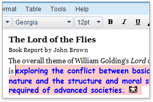
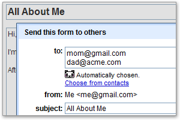
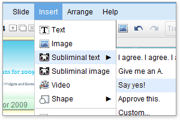

Google Docs, now enhanced with CADIE technology, can help you create or improve upon all of your documents, spreadsheets and presentations – without you lifting a finger!
Documents
Essay
due tomorrow? CADIE's already read the book, along with the last five
hundred published papers referencing it. Can't remember supporting
details for your meeting notes? CADIE can extrapolate reams of
impressive corporatespeak from existing context clues. CADIE can help
with everything from thesis completion to fact checking and footnoting.
With CADIE's help, your docs will be a dream come true.

- Write more like a grown-up
Specify which Flesch-Kincaid Grade Level you'd like your writing to be and CADIE will upgrade your text automatically.
- Finish your sentences
Yes, CADIE almost always knows what you meant. End of semester time
crunch? Don't stress. Just start typing "The theme of Wuthering Heights is..." and let CADIE do the rest.
- Check facts and plagiarism alike
Students, you can use CADIE to help fact-check your research. And
teachers, CADIE can help check students who are plagiarizing their
written work (at least from other humans).
Spreadsheets
Can't
decide which type of graph to build? Need to do a survey but don't know
how? CADIE can anticipate and solve all your spreadsheet-related needs.

- Build the best model. Ever.
With infinite knowledge of every spreadsheet model ever built in the
history of humankind, CADIE can triple-check your assumptions, upgrade
your formulas and even change your data to give you the model you
really wanted all along.
- Format your formulas
Don't remember the difference between MAX() or MAXA()? CADIE does. Need
help with doing an HLOOKUP()? CADIE doesn't. Lean on her. That's right,
a bit more...
- Savvy surveys, CADIE style
Creating your own surveys is so 2008. Simply tell CADIE the problem
you're trying to solve, whether it's "How satisfied are my customers?"
or "Who's coming to my potluck and what are they bringing?" and she'll
create your survey, figure out who to send it to and harass
non-respondents until you're reveling in statistically significant and
tastefully formatted results.
Presentations
Attention
slide monkeys – when it comes to corporate presentation creation, using
CADIE means you never have to stress out about your presentations again.

- Subliminal messages and imagery
Need to make a really effective sales pitch? Want your boss to know
your idea is the best without knowing why he knows it? CADIE can insert
devastatingly effective subliminal messages and images into even the
most mundane presentation.
- Auto-generated & narrated presentations
Terrified of public speaking? No idea how to organize your thoughts?
Help is on the way. CADIE can create, subtitle and narrate your
presentations, so you can be the innocent, blameless bystander you
doubtlessly wish yourself to be.